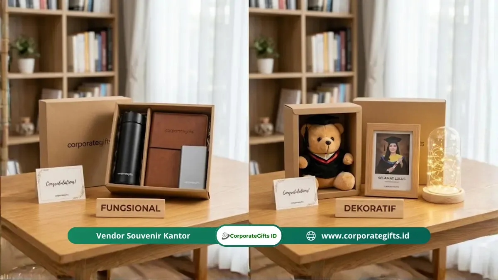

Corporate Gifts ID - Kado sidang skripsi fungsional adalah hadiah kelulusan yang memiliki nilai guna nyata untuk menunjang kehidupan sehari-hari serta fase persiapan transisi menuju dunia kerja profesional, seperti tumbler insulasi, power bank berkapasitas besar, atau set alat tulis kantor premium. Hadiah kategori ini menempati posisi paling aman dan bijak karena pasti memberikan kemanfaatan jangka panjang, berdaya tahan tinggi, serta sama sekali tidak bergantung pada tebak-tebakan selera estetika personal sang penerima.
Momen sidang tugas akhir atau skripsi menandai berakhirnya masa perjuangan akademis seorang mahasiswa sekaligus gerbang pembuka menuju fase seleksi kerja dan karier awal. Sebagaimana dirangkum dalam ulasan mengenai ide kado sidang skripsi unik dan estetik, memberikan barang yang memiliki kegunaan nyata adalah wujud kepedulian tulus yang akan selalu mendampingi perjuangan hidup mereka ke depan.
Poin Kunci Kado Sidang Skripsi Fungsional:
- Nilai Pakai Universal: Langsung terpakai dalam rutinitas mobilitas harian tanpa khawatir tersimpan berdebu di gudang.
- Transisi Dunia Kerja: Mendukung persiapan wawancara kerja, rapat perdana, hingga hari pertama bekerja sebagai profesional muda.
- Fleksibilitas Anggaran: Tersedia dalam beragam rentang harga rasional, mulai dari kado mandiri Rp75.000 hingga paket patungan Rp500.000+.
- Personalisasi Emosional: Penambahan ukiran nama via grafir laser atau emboss inisial menambah kedalaman ikatan emosional tanpa merusak fungsi.
Apa Itu Kado Sidang Skripsi Fungsional dan Mengapa Berbeda?
Kado sidang skripsi fungsional dirancang untuk menyelesaikan kebutuhan nyata penerimanya, bukan sekadar simbol selebrasi sesaat berupa rangkaian bunga plastik atau boneka toga mini yang umumnya hanya bertahan dipajang beberapa pekan sebelum berakhir di dalam kardus penyimpanan.
Benda fungsional seperti tumbler kedap udara, organizer kabel, buku catatan kerja berkulit keras, dan catu daya portabel akan selalu berada di dalam ransel kerja, menemani perjalanan komuter, bertengger di atas meja kantor, serta digenggam tangan penerima setiap hari.
Fakta Data Konsumen: Berdasarkan laporan tren belanja ritel e-commerce di Indonesia tahun 2024, kategori produk fungsional seperti aksesori elektronik portabel, botol minum termal, dan alat tulis eksekutif secara konsisten menduduki posisi tiga besar kategori bingkisan terpopuler selama musim sidang skripsi dan wisuda kampus. Hal ini membuktikan pergeseran cara pandang generasi muda yang semakin rasional dan berorientasi pada kemanfaatan nyata.
Mengapa Kado Fungsional Lebih Aman Dibanding Selera Estetika?
Membeli hadiah berdasarkan selera fashion atau selera dekorasi selalu sarat akan risiko kegagalan. Warna pakaian yang menurut Anda menarik bisa jadi merupakan warna yang dihindari oleh teman Anda. Ukuran pakaian yang salah sedikit saja dapat menimbulkan rasa canggung. Selain itu, hiasan kamar yang menurut Anda lucu berpotensi terkesan kekanak-kanakan bagi seorang sarjana baru yang sedang berusaha membangun citra profesional.
Kado fungsional mengeliminasi seluruh risiko tersebut karena nilai gunanya bersifat universal. Siapa pun sarjana yang baru lulus pasti membutuhkan catu daya baterai cadangan saat menjalani jadwal tes psikotes atau wawancara kerja lapangan (on-site). Mereka pasti membutuhkan tumbler stainless steel untuk menghemat pengeluaran air minum dan kopi harian. Mereka pun pasti membutuhkan pulpen metal berkualitas tinggi untuk menandatangani berkas kontrak kerja perdana mereka.
Survei kepuasan penerima hadiah oleh National Retail Federation (NRF) mencatat bahwa sebanyak 63 persen responden secara tegas menyatakan jauh lebih menghargai kado yang memiliki fungsi pakai nyata dibanding hadiah yang murni bersifat simbolis.
Siapa yang Paling Tepat Menerima Kado Fungsional Ini?
Seluruh mahasiswa yang baru menuntaskan sidang skripsi sangat layak menerima kado fungsional. Mereka berada pada titik persimpangan hidup yang membutuhkan berbagai peralatan pendukung mobilitas mandiri. Baik mahasiswa jurusan teknik, kedokteran, ekonomi, hukum, sastra, hingga seni rupa, semuanya membutuhkan piranti praktis untuk menunjang aktivitas pasca-kampus.
Bagi lingkaran sahabat seperjuangan satu bimbingan atau organisasi, kalian dapat menerapkan sistem patungan untuk membelikan satu unit kado bernilai tinggi, seperti power bank 20.000 mAh bersertifikasi keselamatan resmi atau earphone wireless berkualitas jernih. Sementara bagi orang tua atau saudara kandung, menghadiahkan set alat tulis eksekutif dan tas laptop ergonomis menjadi doa nyata bagi kelancaran karier masa depan sang lulusan.

Sentuhan grafir laser nama pada tumbler stainless steel dan notebook hardcover menghadirkan kesan mewah sekaligus kepemilikan personal.
Kapan Waktu Paling Tepat untuk Menyerahkan Hadiah?
Waktu paling ideal menyerahkan kado sidang skripsi fungsional adalah tepat setelah pengumuman kelulusan yudisium sidang dibacakan oleh dewan penguji. Momen tersebut dipenuhi luapan kelegaan dan kebahagiaan setelah berbulan-bulan tertekan oleh revisi naskah skripsi.
Keunggulan utama kado fungsional terletak pada kecepatan utilitasnya. Tumbler air minum dapat langsung dipakai ketika penerima harus bolak-balik menemui dosen pembimbing untuk tanda tangan lembar pengesahan. Power bank langsung berguna untuk menjaga daya baterai smartphone tetap penuh saat mengantre berkas administrasi yudisium dan pendaftaran wisuda universitas.
Kriteria Kado Fungsional yang Benar-Benar Tepat Sasaran
Agar kado yang Anda berikan tidak menjadi beban baru bagi penerimanya, pastikan barang pilihan Anda memenuhi empat kriteria fundamental berikut:
- Relevan dengan Dunia Pasca-Kampus: Pilih benda yang bisa menemaninya saat sesi wawancara, pelatihan magang, hingga tahun-tahun awal bekerja di kantor.
- Kualitas Durabilitas Terjamin: Jangan tergiur harga murah tanpa merek jelas. Tumbler yang bocor dalam hitungan minggu atau power bank yang cepat menggelembung hanya akan mencoreng kesan baik pemberian Anda.
- Kemudahan Portabilitas: Ingat bahwa mahasiswa yang baru selesai sidang sudah kelelahan menenteng map berkas tebal dan laptop. Hindari kado berbobot raksasa yang menyulitkan mobilitas mereka saat pulang dari kampus.
- Personalisasi yang Sopan: Bubuhkan ukiran nama atau inisial tipis yang rapi agar barang tidak mudah tertukar di tempat kerja baru nanti.
Berapa Anggaran yang Wajar untuk Kado Sidang Fungsional?
Anggaran belanja hadiah sidang skripsi sangat fleksibel dan dapat disesuaikan dengan kemampuan finansial Anda:
- Budget Ekonomis Mandiri (Rp75.000 - Rp150.000): Notebook hardcover bergaris dengan sampul kulit sintetis ditambah pulpen metal elegan berbobot seimbang dalam kemasan kotak minimalis.
- Budget Menengah Populer (Rp150.000 - Rp300.000): Tumbler stainless steel berinsulasi ganda (tahan panas/dingin 12 jam) dengan grafir laser nama personal atau organizer pouch kabel multifungsi.
- Budget Premium Kolektif / Patungan (Rp300.000 - Rp600.000+): Power bank kapasitas 20.000 mAh berfitur pengisian cepat 22.5W / 65W GaN, earphone wireless berperedam bising, atau tas ransel laptop anti-air berdesain minimalis modern.
7 Pilihan Kado Sidang Skripsi Fungsional yang Pasti Terpakai
Berikut adalah kurasi 7 pilihan produk fungsional terbaik yang terbukti 100% bermanfaat dan selalu dicari oleh para lulusan baru:
1. Tumbler Stainless Insulasi dengan Grafir Nama
Botol minum termal menjaga suhu kopi tetap hangat di meja kerja atau air dingin tetap segar saat beraktivitas di jalan. Pilihlah bahan stainless steel grade SUS 304 food grade. Grafir laser nama penerima menghadirkan kesan eksklusif sekaligus mencegah botol tertukar di kantor nanti. Simak panduan lengkapnya di artikel tumbler nama terukir kado sidang skripsi.
2. Set Alat Tulis Premium dan Notebook Hardcover
Buku catatan kerja dengan kertas tebal 80-100 gsm yang tidak tembus tinta dan pulpen metal berbobot mantap adalah perlengkapan tempur wajib seorang pekerja profesional. Hadiah ini memancarkan aura kesiapan menyongsong karier pertama. Pelajari detail spesifikasinya di set alat tulis premium dan notebook hardcover untuk sidang.
3. Power Bank Kapasitas Besar (Fast Charging)
Tidak ada yang lebih menegangkan bagi seorang pencari kerja selain melihat baterai ponselnya sekarat di tengah perjalanan menuju wawancara kerja. Power bank berkapasitas 10.000 hingga 20.000 mAh dengan dukungan Power Delivery (PD) adalah malaikat penyelamat mutlak yang akan selalu dibawa ke mana pun mereka pergi.
4. Organizer Pouch Kabel dan Aksesori Gadget
Tas kantong khusus berbahan poliester tebal anti-air dengan kompartemen elastis untuk merapikan kepala charger laptop, kabel data ponsel, flash disk, dan mouse kerja. Produk ini mengakhiri drama kabel ruwet di dasar ransel kerja.
5. Earphone TWS Wireless (True Wireless Stereo)
Earbuds nirkabel dengan mikrofon jernih sangat krusial untuk mengikuti wawancara kerja daring (Zoom/Google Meet) dari kamar atau mendengarkan musik fokus saat mempersiapkan berkas lamaran kerja di kedai kopi.
6. Lampu Belajar LED Portable (Rechargeable Desk Lamp)
Lampu meja lipat yang memiliki baterai isi ulang mandiri dengan pengaturan tingkat kecerahan cahaya lembut (warm white). Sangat bermanfaat bagi para pejuang revisi naskah dan pencari kerja yang sering lembur belajar di kamar tanpa menyilaukan mata.
7. Sleeve atau Tas Ransel Laptop Tahan Air
Laptop adalah aset terpenting mahasiswa pasca-sidang untuk menyusun portofolio dan CV kerja. Tas laptop dengan busa pelindung tebal anti-benturan dan lapisan kain tahan percikan air hujan (water-repellent) menjadi benteng pertahanan terbaik bagi perangkat kerja mereka.
Tabel Komparasi Produk Fungsional dan Estimasi Biaya
Gunakan tabel matriks komparasi di bawah ini untuk menentukan pilihan kado yang paling pas dengan skema anggaran Anda:
| Pilihan Kado | Fungsi Utama | Kisaran Budget | Daya Tahan | Opsi Personalisasi |
|---|---|---|---|---|
| Tumbler Stainless SUS 304 | Menjaga suhu minuman kopi/air harian | Rp150.000 - Rp250.000 | 3 - 5+ Tahun | Grafir laser nama presisi |
| Notebook & Pen Metal | Catatan rapat kantor & interview kerja | Rp95.000 - Rp200.000 | 1 - 2 Tahun (Isi ulang pen) | Blind deboss inisial kulit |
| Power Bank 20.000 mAh | Catu daya darurat mobilitas luar kantor | Rp250.000 - Rp450.000 | 2 - 3 Tahun | UV print nama / pesan ringkas |
| Organizer Pouch Kabel | Merapikan aksesori charger di dalam tas | Rp75.000 - Rp150.000 | 3 - 4 Tahun | Bordir inisial / sablon nama |
| Earphone TWS Wireless | Meeting daring & interview virtual | Rp200.000 - Rp500.000 | 2 - 3 Tahun | Stiker case akrilik personal |
Kesalahan yang Sering Terjadi Saat Memilih Hadiah Sidang
Hindari beberapa kekeliruan fatal yang kerap dilakukan para sahabat saat berburu kado kelulusan:
- Terjebak Tren Barang Lucu tapi Nirfungsi: Pajangan miniatur akrilik berfoto atau buket snack instan memang tampak meriah di foto Instagram hari itu, namun seminggu kemudian biasanya langsung menumpuk debu atau terbuang.
- Mengorbankan Kualitas demi Harga Terlalu Murah: Membeli power bank Rp30.000 tanpa merek berisiko merusak smartphone teman Anda. Jika anggaran terbatas, lebih baik membeli notebook berkualitas Rp70.000 daripada gadget murahan yang berbahaya.
- Memilih Warna yang Terlalu Mencolok: Hindari warna neon mencolok jika barang tersebut ditujukan untuk lingkungan kerja formal. Selalu prioritaskan palet warna netral profesional seperti hitam, abu-abu arang, navy, atau perak.
Pertanyaan Seputar Kado Sidang Skripsi (FAQ)
Kesimpulan dan Solusi Cerdas Hadiah Kelulusan
Memilih kado sidang skripsi fungsional adalah bentuk dukungan moral dan praktis terbaik yang bisa Anda berikan kepada sahabat tercinta. Benda-benda yang tahan lama dan menunjang produktivitas akan senantiasa hadir menemani langkah pertama mereka menaklukkan dunia profesional.
Jika Anda mewakili angkatan kampus, organisasi mahasiswa, atau ingin memesan paket cinderamata kelulusan berdesain khusus dengan grafir nama presisi, jelajahi layanan kurasi kado dan souvenir wisuda kami di CorporateGifts.ID. Temukan puluhan pilihan produk siap kustom logo atau ajukan rancangan paket khusus melalui formulir Permintaan Penawaran (RFQ) Corporate Gifts ID sekarang juga!

Ditulis oleh: Arinda Zakia
Senior Corporate Gifting SpecialistSpesialis pengadaan cinderamata korporat dan konsultan pengadaan B2B di CorporateGifts.ID. Berpengalaman lebih dari 8 tahun dalam manajemen merchandise promosi, standardisasi perlengkapan kantor, dan kurasi souvenir premium instansi pemerintah serta korporasi multinasional.
Lihat Profil Lengkap & Panduan Lainnya